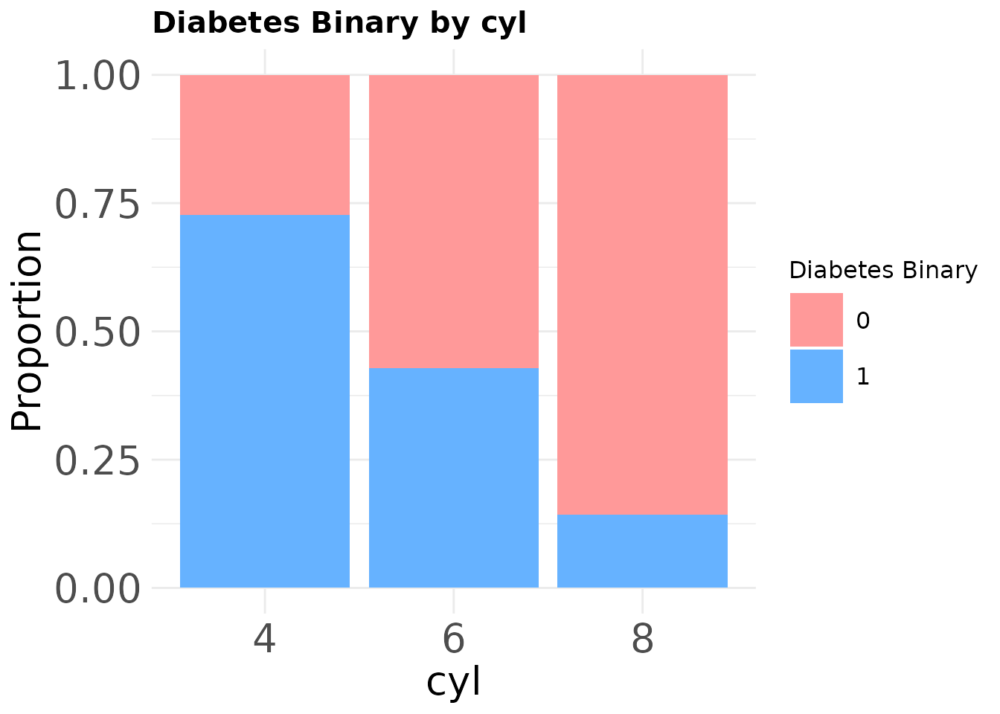

predictdiabetes-vignette
predictdiabetes-vignette.RmdGenerate Plots
## Generate Bar Plots Using mtcars
# First, convert variables to factors since mtcars stores them as numeric
mtcars$cyl <- as.factor(mtcars$cyl)
mtcars$gear <- as.factor(mtcars$gear)
mtcars$am <- as.factor(mtcars$am)
bar_plots <- categorical_bars(
data_frame = mtcars,
cat_vars = c("cyl", "gear"),
target_col = "am",
title_size = 15,
axis_size = 20
)
## Display one of the bar plots, e.g., for cyl:
(bar_plots[["cyl"]])
# Convert existing variables to factors.
mtcars$cyl <- as.factor(mtcars$cyl)
mtcars$gear <- as.factor(mtcars$gear)
# Create a binary categorical variable from 'mpg':
# 'High' if mpg is at or above the median, and 'Low' otherwise.
mtcars$mpg_cat <- ifelse(mtcars$mpg >= median(mtcars$mpg), "High", "Low")
mtcars$mpg_cat <- as.factor(mtcars$mpg_cat)
chi_results <- cramer_chi_results(
df = mtcars,
categorical_vars = c("cyl", "gear"),
target_col = "mpg_cat"
)
#> Warning in stats::chisq.test(tbl): Chi-squared approximation may be incorrect
#> Warning in stats::chisq.test(tbl): Chi-squared approximation may be incorrect
# Display the resulting summary table.
chi_results
#> # A tibble: 2 × 7
#> Variable Statistic DF p_value Expected_Min Expected_Max CramersV
#> <chr> <dbl> <int> <dbl> <dbl> <dbl> <dbl>
#> 1 cyl 22.5 2 0.0000128 3.28 7.44 0.839
#> 2 gear 13.9 2 0.000977 2.34 7.97 0.658